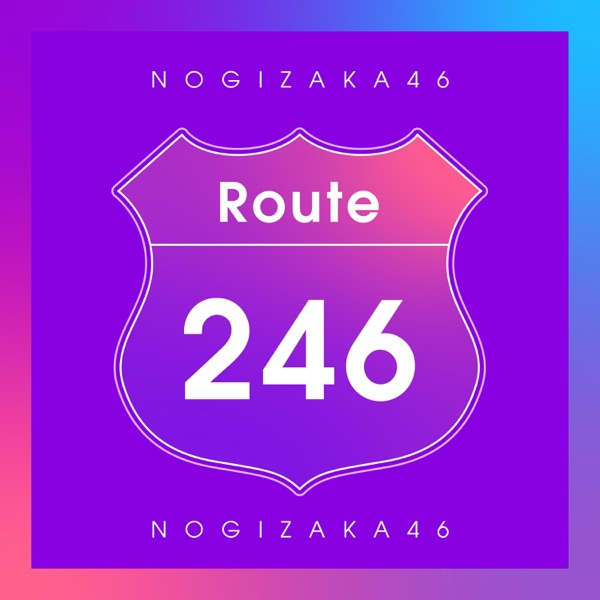

Route 246るーとつーふぉーてぃーしっくす

初収録リリース「Route 246」のジャケット
乃木坂46
発売日：2020-07-24
収録：Route 246（Digital）
種別：表題曲
センター：齋藤飛鳥
作曲：小室哲哉
編曲：Music Design、小室哲哉
ライブ披露：24件
フォーメーション
上が後列、下が前列です。色付きがセンター。（参考データに基づく）
 新内眞衣
新内眞衣 北野日奈子
北野日奈子 大園桃子
大園桃子 筒井あやめ
筒井あやめ 星野みなみ
星野みなみ 岩本蓮加
岩本蓮加 高山一実
高山一実 梅澤美波
梅澤美波 堀未央奈
堀未央奈 山下美月
山下美月 久保史緒里
久保史緒里 秋元真夏
秋元真夏 松村沙友理
松村沙友理 与田祐希
与田祐希 生田絵梨花
生田絵梨花 齋藤飛鳥
齋藤飛鳥 遠藤さくら
遠藤さくら 賀喜遥香
賀喜遥香参加メンバー（18名）
秋元真夏、生田絵梨花、齋藤飛鳥、高山一実、星野みなみ、松村沙友理、北野日奈子、新内眞衣、堀未央奈、岩本蓮加、梅澤美波、大園桃子、久保史緒里、山下美月、与田祐希、遠藤さくら、賀喜遥香、筒井あやめ
この曲が披露されたライブ（24件）
新しい順に20件まで表示しています（全24件）。